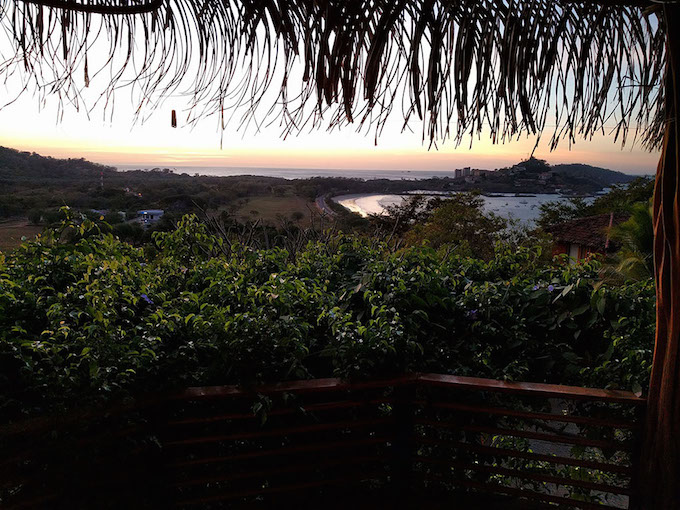
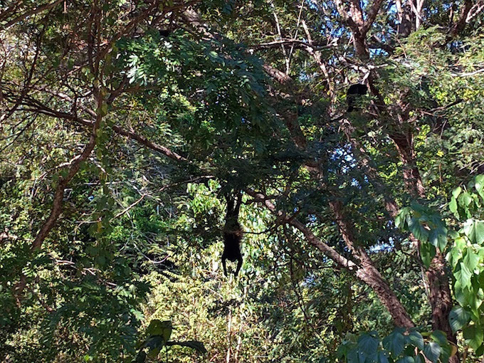
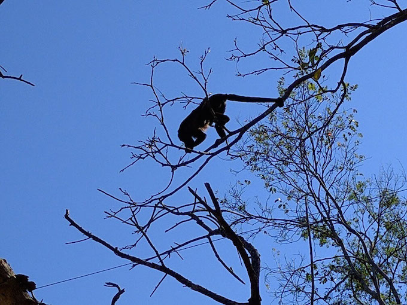
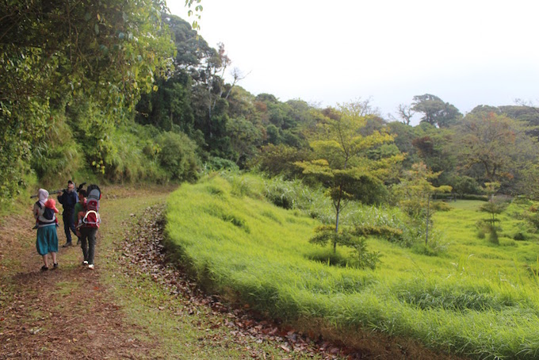
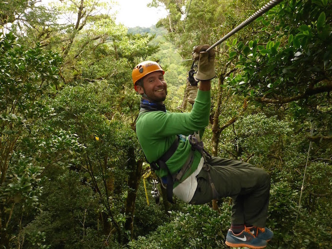
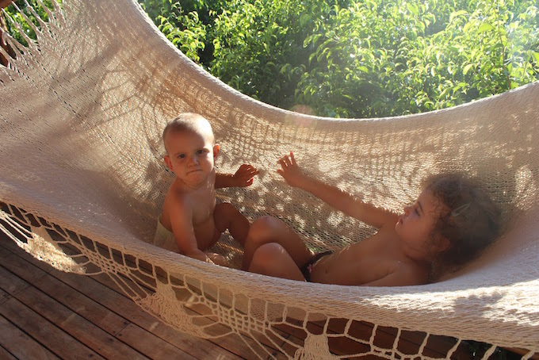
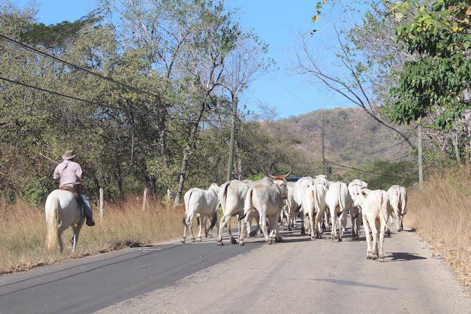
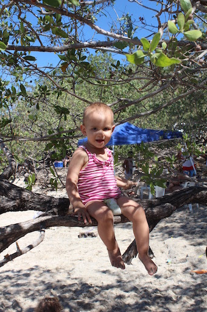

HOME
Kostaryka Costa Rica
Zaczęło się od banknotu 10 000 ¥ i zaproszenia do Japonii. Specjalny prezent ślubny od Konrada,
który w założeniu miał nas zmobilizować do wyjazdu do Kraju Kwitnącej Wiśni na dwa tygodnie.
Ostatecznie wygnał nas na ponad dwa miesiące do Ameryki Środkowej, a to dopiero początek!
It have all started with a banknote of ¥ 10,000 and an invitation to Japan. A special wedding gift from Konrad,
which was suppose encourage us to go to the Land of the Rising Sun for two weeks. Finally, we ended up in
Central America for more than two months, and this is just the beginning!
Podróż
The journey
Podróż samolotami minęła dość szybko i bezboleśnie, bo lecieliśmy w nocy i można było się po prostu
zdrzemnąć (wielokrotnie). Dziewczynki też nie protestowały i wygodnie rozciągnęły się na swoich fotelach
na ponad 10h lotu (+2h międzylądowanie + 3h kolejny lot)
Po przylocie przywitał nas wschód Słońca (nareszcie! po ponad 20h w ciemnościach) i średnio uczciwa
firma wynajmująca auta.
W końcu bardziej opłacało się wynająć taxi, “po znajomości” (pana ze “średnio uczciwej firmy”!)
udało się ściągnąć małego busa i pojechaliśmy. Taksówkarz “gnał” 80km/h, a droga w wielu miejscach
zatkany była retro ciężarówkami… do tego auto bez klimy, więc podróż trochę się dłużyła… zwłaszcza
rodzicom wymiotującego dziecka (Ala po mamie odziedziczyła dwie rzeczy: chorobę lokomocyjną i dziwne
paznokcie na małym palcu u stóp >_<).
W końcu ok południa dotarliśmy na Playa Flamingo i do naszego nowego domu :)
Traveling by planes passed fairly quickly and with no surprises, we just took many naps during the flights.
The girls didn’t opose and stretched comfortably on their seats during almost 10h of the flight
(and later 2h stopover + 3h another flight...).
Upon arrival we were greeted by a sunrise (finally! after more than 20 hours in the dark) and not very fair
car rental company. In the end, it paid off more to rent a taxi... Taxi driver "raced" 80km/h and the road
was blocked in many places by some “retro trucks”... so the ride felt like forever, especially that the car
did
not have air-con, and Ala started to vomit every 15min (after her mom she inherited two things: car
sickness and weird nails on the little toes > _ <). In the end, we have arrived to our new home
at Playa Flamingo around the noon, and it was beautiful (partly because it is beautiful and partly because
the trip was finally over!) :)

Widok z balkonu i sypialni :)
View from the balcony and the bedroom :)
Jet lag
Chociaż jesteśmy 7 godzin do tyłu, to jet lag nie był wcale najgorszy, a nawet się przysłużył,
bo przestawiliśmy się bezboleśnie na pobudki o 6 rano.
Dni cały rok trwają tutaj ok 12h, wschód ok 6, zachód ok 18… nuuuda ;)
Although we are seven hours behind, the jet lag was not that bad, it even helped us to shift our daily
routine and wake up at 6 in the morning. Through the year, all days here last
about 12 hours, with the sunrise at 6 and the sunset at 18…. boaring ;)

Video-czat z Barcelona o 5 rano...
Video-chat with Barcelona at 5 am...
Jedzenie
The food
Jest tu dość drogie. Jakby przeliczyć ceny w supermarketach, okazuje się, że wszystko wychodzi
ok 2-3 razy drożej niż w Pl… w restauracjach jest tylko 2 razy drożej :)
...ale jak już się zapłaci, to można zjeść całkiem nieźle. Króluje ceviche (ryba marynowane w soku z
limonki/cytryny),
guacamole i “casado”, czyli typowy obiad mężczyzny żonatego (fasolka + ryż + smażony banan + opcjonalnie
kawałek mięsa/ryby). Miejscowi utrzymuja, ze "casado" nazwe zawdziecza temu, ze jest to pierwszy (nie stały)
posiłek po slubie... :)
The food here is pretty expensive. Comparing prices in supermarkets, it turns out that everything is
about 2-3 times more expensive than in Europe ... in restaurants it’s only twice more expensive :)
...but once you pay, you can eat quite well. Ceviche (fish marinated in lime juice / lemon) is very
popular here, the national dish is called "casado", which is a typical diner of a “married man” (beans
+ rice + fried banana + optional piece of meat / fish). Locals hold that "casado" gets its name from a fact
that it is the first (not the only) meal that you eat after getting married... :)
Pierwsze śniadanie
The first breakfast

To kostarykańska włoszczyzna… jakby ktoś wiedział czym są małe okrągłe warzywa z prawej (żółte i
zielone), będę wdzięczna za info!
Veggies for a Tico soup... not sure what are those small round (green or yellow) things on the right?
Zwierzaki domowe
House animals
Przede wszystkim X-liardy mrówek, są wszędzie i zawsze. Nawet w muszli klozetowej…
jedzenie można przechowywać tylko w lodówce i dużych plastikowych, zapinanych workach.
Pół godziny nieostrożności i małe paskudy zaraz się częstują. Wyżerają też owoce z miski -_-
Koło balkonu pojawiają się też kolibry, ale tym dość ciężko zrobić zdjęcie w domowych warunkach.
First of all, X-lions of ants, they are everywhere and at any time. Even in the toilet bowl... food must
be stored in the refrigerator or large plastic zippered bags. Half an hour carelessness and small villains
help themselves with your food.

W domu mamy też czasem pająki...
Sometimes we find spiders in the kitchen...

...i jaszczury :) To ponoć najszybszy taki gad na świecie. Samce w porze godowej robią się
pomarańczowe.
Jeden taki pomaranczowy grasuje u nas na balkonie, zapewne ze względu na jakże romantyczną scenerię. W efekcie
jesteśmy skazani na takie oto widoki:
...and lizards ;) This one is suppose to be the world fastest sprinter (among this kind of reptiles).
During the mating season, males get a bit of an orange color.
One of the orange ones visits our balcony (presumably due to a very romantic scenery). As a result we can watch
scenes as this one:...
Okres godowy!
The mating season is on!


Czasem można oberwać w głowę gałęzią rzuconą (z premedytacją! ) przez jakąś małpę.
Sometimes one can get hit in the head by a stick thrown (deliberately) by some monkey:
Plaża
The beach
Dzień bez plaży, dniem straconym! Chociaż zwykle wychodzimy z domu dopiero po 15, wcześniej temperatury
i UV są dość ekstremalne…
Day without a beach is a day lost! Usually we go out after 3 pm, earlier the temperature and the UV is
a bit too extreme...

Chłopaki wynajęli deskę do surfingu i trenują
Boys rented a surf board and practice intensively
Mamuśka ćwiczy na sucho, bo boi się rekinów :P
Mommy prefers dry practice... she'e afraid of sharks :P


Dzieci są oczywiście zachwycone ogromną piaskownicą
The kids are thrilled to play in a huge sandpit

...i tak przyjemnie siedzi się na plaży aż do zachodu :)
...it's nice to stay on the beach until the sunset :)
...po plaży czas na Coco Loco, albo inne kolorowe koktajle :)
...after the beach it's time for Coco Loco, and/or other colorful cocktails


Zdjęcie pt. "o jednego kokosa za dużo"
To many coconuts

Żółwie
The turtles
Na niektóre plaże w okolicy nocami wychodzą żółwie morskie! Co prawda jeszcze żadnego
nie widzieliśmy na żywo, ale znaleźliśmy kilka pasm śladów i gniazdo, z którego dopiero
co wyszły świeżo wyklute żółwiątka. Najczęściej plaże, na które przypływają żółwie są
chronione i można się na nie dostać tylko z przewodnikiem, ale akurat wyjątkowo koło
nas są ogólnie dostępne. Może niedługo zarwiemy jakąś nockę i “zapolujemy” na gady
na żywo :)
On some beaches in the area one can spot sea turtles! So far we haven’t seen any of
those animals in live, but we’ve found plenty of nests, one of them had remainings of eggshells.
Normally beaches, where turtles lay their eggs, are protected and one can go there only with a guide.
However, for some reason, there are several beaches near us which are generally available. Maybe soon
we’ll try to go there and "hunt" on reptiles with our cameras :)

Wyspa piratów przy żółwiej plaży
Pirates island next to the turtles beach

Ślady żółwia
Steps of a trutle

Crossfit z wózkiem
Crossfit with a stroller
Gniazdo ze skorupkami
Nest with some empty eggshells
Monteverde
Tu, gdzie jesteśmy (półwysep Nicoya) jest dość sucho i gorąco, więc żeby zobaczyć
prawdziwy tropikalny las, musieliśmy wybrać się na weekend do Monteverde
(czyli do Zielonej Góry :P).
Mieszkaliśmy w 30m2 domku w lesie… z sygnałem WiFi :) Koło domu grasował narwany kogut,
kilka razy musiałam go (niestety) potraktować butem :/
Za to koati były bardzo przyjazne. Jedno stado odwiedzało akurat tyły małej restauracji...
niczym rasowi turyści rzuciliśmy sie do okien z aparatami :P
(reszta gości średnio przejeła się widokiem...)
The place where we stay (Nicoya Peninsula) the climate is quite dry and hot.
To see a real tropical forest, we had to go to Monteverde (ie, to the Green Mountains).
We stayed in a 30m2 cabin in the woods ... with a WiFi signal :) A crazy rooster rooster was guarding
the garden around the house, and few times I had to (unfortunately) treat it with my shoe :/ On the other
hand coati were very friendly. One herd visited the backyard of a small restaurant... just like proper
tourists we rushed to the windows with our cameras :P (rest of the guests did not seem to be thrilled
by the view ...)

Domek w dżungli
Our house in a jungle
Dani w pracy
Dani working
Kogucisko :-o (naprawdę był spory)
A really big rooster

Stado koati
Coati herd

Jedno koati
One coati

Las tropikalny
The tropical forest
O 7:30 rano ruszyliśmy do lasu! W Monteverde jest kilka parków,
państwowych i prywatnych, wejście jest płatne i najczęściej z przewodnikiem. Nam też
się jeden trafił i sprawdził się świetnie, prawdę mówiąc bez przewodnika przez
3 godziny pewnie zobaczylibyśmy bardzo dużo drzew i jeszcze więcej mrówek.
Przewodnik przede wszystkim nosił za nami sporą lornetko-lunetę i sprawnie
ustawiał ją za każdym razem, kiedy zobaczył albo usłyszał coś ciekawego.
Poza tym dowiedzieliśmy się też, że niektóre drzewa rosną w dół, storczyki najczęściej
mają po kilka milimetrów, i że nie każda liana jest prawdziwą lianą.
W tym regionie bardzo popularne są "canopy", czyli małpie gaje, niektóre zjazdy są długie nawet na kilometr.
About 7:30 am we went for a hike in the forest! There are several parks in Monteverde, public and private,
the entrance is paid and normally includes a guide. We also got a guide and in fact, without one, we would
probably only watch trees and ants for 3 hours. The guide was carrying a pretty large binocular-telescope
and
was efficiently showing us all the jungle animals around. We’ve also learned that some trees grow from the
top
to the bottom, orchids usually have only few millimeters, and that not every liane is a real. "Canopy"
is a very popular thing in the region, some rappelling cables are even one km long!

Ruszylismy...


Z przewodnikiem
With our guide

Zdjęcie rodzinne ;)
Family photo

Lornetko-lunety i ptak celebryta :D
binocular-telescopes and a celebrity bird

Ptak celebryta
Celebrity bird

Keel-Bill tukan


Z parku kolibrow
Hummingbirds park

Mini awokado...

...i mini-storczyk
Mini orchids

Nasiona tego drzewa kiełkują na szczycie innego drzewa i cała roślina rośnie w dół.
Po jakimś czasie drzewo pasożyt "zadusza" roślinę, na ktoórej rośnie.
The seeds of this tree germinate on top of another tree and the whole plant grows down.
After some time the parasite tree "suffocates" the base plant.


Po pierwszym drzewie zostaje tylko dziura...
A hole is all that is left after the base tree...

...w której można się schować :)
...and it's a great place to hide :)
Super Konrad

Super Dani
PURA VIDA!
Pura vida! (dosłownie czyste życie, ale chodzi o coś w rodzaju esencji życia) działa tu jak dzień dobry,
dowidzenia i ogólna zaczepka na wszystkie okazje.
Staramy się jak możemy, żeby to życie tutaj było naprawdę "czyste" ;P
Pura vida (literally pure life) works here as a good morning, a goodbye and a general saying for every occasions!
We try hard to make our life here really "pure" :P
Płot
A Fence
Dobre miejsce na drugie śniadani
A good place for the second breakfast
Dobre miejsce na smoothie
A good place for a smoothie

Miejsce na relaks
A place to relax
Na obiad przepis z fb ;)
Lunch, recipe from fb ;)
Jedziemy powoli na plażę, a tu nagle...
We're on the way to the beach, when suddenly...

...wyprzedzają nas krowy!
...cows advance us!
Plaża i zimna pipa
The beach and a cold pipa
Jest pyszna!
It is delicious!
Mały pies
A small dog
Duży piess
A big dog

...i mała małpka
...and a little monkey
^_^